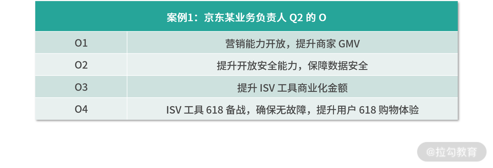

- 00 OKR 工作法：组织目标管理的神器.md.html
- 01 目标管理发展：OKR 之前，大家都在用什么管理组织目标？.md.html
- 02 OKR 价值：为什么互联网公司都在用 OKR？.md.html
- 03 OKR 与战略：OKR 如何解决组织增长问题？.md.html
- 04 OKR 生成：各层级的 OKR 要遵循什么规律？.md.html
- 05 O：什么样的 O 得领导赏识？.md.html
- 06 KR ：写好 KR 的万能公式.md.html
- 07 案例实战：教你写出高质量的 OKR.md.html
- 08 流程：你应该这样制定、管理 OKR!.md.html
- 09 OKR 与 KPI 的区别和联系.md.html
- 10 激励：如何用 OKR 激活你的团队？.md.html
- 11 文化：OKR 文化的塑造和沉淀.md.html
- 12 变革：OKR 转型难点及解决方案.md.html
- 13 加餐 OKR 填写模板及案例.md.html
- 结束语 OKR 工作法：制胜互联网下半场.md.html
- 捐赠
05 O：什么样的 O 得领导赏识？
在上一节，我给你介绍了组织中各个层级的 OKR 生成规律。通过该规律，可以帮助我们在制定 OKR 时，保证和组织的战略对齐并通过额外的自驱方向来支撑组织发展。那么，一旦涉及某个具体的 OKR，选择哪些 O 对于组织是有价值的，有没有规律可循？有没有“万能公式”，来帮助我们更高效地编写 KR 呢 ？这就是接下来我要帮你解决的问题。
首先，我们来看一个快手的 OKR 案例。看案例的时候，你可以留意 O+KR 这种结构化的表达方式，以及 KR 的呈现特点，以便你对于 OKR 的完整写法有一个概貌上的了解。
2019 年 6 月 18 日，一场在快手内部被称作“K3”的战役正式打响，创始人宿华和程一笑在全员内部信中表达了对公司现状的不满，并给出了“战斗”的明确目标：2020 年春节前后，3 亿 DAU。随后，快手采取了一系列的行动来去完成 K3 目标，我梳理了下，如果把快手的 K3 目标 OKR 化，可以梳理成如下所示：
O：通过“K3”战役，在 2020 年春节前后，快手达 3 亿 DAU。 KR1：依靠极速版，春节前 DAU 峰值突破3 亿。 KR2：通过丰富垂类内容、大量签约 MCN、进行活动策划和运营、给予流量扶持等做法来保持留存率，保证春节前 DAU 峰值突破3 亿。 KR3：依靠春晚红包，春节后三个月 DAU 平均值达到3 亿。
这是一个典型的 OKR 写法，通过 O 来描述我想要做什么，然后对应着 3 个具体的 KR 来支撑 O 的实现。 我相信，看过 2020 年春晚的同学一定会知道，快手和春晚确实是通过红包的形式展开了合作，并且给快手拉新了大量的用户，这就是其中 KR3 的落地。
回到我们工作当中，O 和 KR 的写法有没有一些基本遵循的原则和规律呢？我们首先来看 O，对于目标，我们很少有人能在一开始就思考得非常清楚，总是感觉做着做着，目标才渐进明细，这其实就是 O 的基本属性——迭代属性。
O 的迭代属性
接下来，我通过列举个人 2020 年 Q1、Q2 和 Q3 季度某个 O 的 3 种写法来说明 O 的迭代属性。
Q1 该 O 的描述：京东 OKR 工作法落地和执行，帮助全部门高质量完成业务目标。 Q2 该 O 的描述：京东 OKR 工作法落地和执行，高质量完成业务目标，灵活进行组织绩效管理。 Q3 该 O 的描述：京东 OKR 工作法落地和执行，高质量完成业务目标，灵活进行组织绩效管理，并激活组织中的个体。
这三个 O 其实属于同一个方向，就是帮助组织落地 OKR 工作法。但你会发现，每一个 Q 我的描述都会变，因为随着时间的推移，我对 OKR 方法实践理解的加深，会发现这个方向越来越多的价值，从而对于 O 的描述也在迭代升级 。
在 2019 年年底制定 2020 年 Q1 目标的时候，我期望通过 OKR 工作法，推动部门关注目标和关键结果的达成，帮助整个部门更好地去完成业务目标，这是 OKR 最基本的价值。由此，就形成了 Q1 的描述。
随着整个 Q1 的实践和深入的理解，我发现 OKR 不仅可以帮助组织管理好既定的业务目标，当我们发生目标变化或者新增目标的时候，OKR 自身所带的灵活性可以帮助组织灵活地进行绩效管理，这是对于该方向新增的认知迭代升级，所以我在 Q2 制定该方向的 O 时，就增加了“灵活进行组织绩效管理”的字眼。
那么到了 Q3，我之所以在该方向的 O 中增加“激活组织中的个体”，是因为 OKR 倡导的自驱和挑战理念引导了 Q2 团队中的一些个体自驱在为组织做着更多贡献，释放了组织中更多个体的潜能，激活了组织中的个体。
所以，我们个人在写 O 时，不用纠结于一次性就想写的很完美，因为随着对某个工作方向的持续实践和理解，我们对于该方向所产生的价值和意义在认知上就会迭代升级，然后更新改善 O 的描述，让描述逐渐变得更加准确，这就是 O 写法的迭代属性。而至于我们在什么时候去迭代调整 O 的描述，可以及时修改，比如立马想到就立马改，也可以定期修改，比如每周或每月来迭代修改 O。
当然，除了 O 的写法可以迭代着去进行完善之外，想要写好 O ，我们还需要注意遵守一些原则。
写好 O 需要遵守的 4 个原则
我们在写 OKR 中的 O 时，需要遵守这 4 个原则：纵向和横向对齐、本季度切实可行、聚焦性以及需要融入自驱&挑战理念。
1. 纵向和横向对齐
在之前所讲“OKR 生成的规律”一节，我们知道，O 需要对齐组织或者部门从上往下拆解下来的战略方向，我把上下级方向上的一致性称为在制定 OKR 时需注意的“纵向对齐”，有了纵向对齐才能让组织中的战略落地，否则无法形成组织合力。
此外，个人的工作当中，有很多需要外部支援的事情，我把这种外部依赖和支持的方向称为在制定 OKR 时需注意的“横向对齐”。比如，我在制定自己 OKR 时，就会思考在纵向上如何落地部门战略关心的效能提升方向，在横向上也会想其他部门对于培训有没有需要我支持的方向。这就是我们在写 O 时需注意的纵向和横向对齐。
2. 本季度切实可行
从 OKR 的制定节奏上来说，国内大部分包括京东在内的组织都是按照季度来制定的，所以我们每季度中所写的 O 要能在本季度可执行，不能执行的就不要写。比如，公司定了一个年度销售1个亿的挑战目标，我们在定第一季度 OKR 时，就要对这一个亿进行拆解，写一个 Q1 能完成的目标放到 OKR 中，而不是把一个亿直接作为 Q1 的 OKR。也就是说，在定季度 OKR 时，O 一定是切实可行的，本季度努力一把是够得着、达得到的，而不是制定根本就完成不了的“虚荣目标”。
3. 聚焦性
在日常的工作当中，我们每个人可能会有多个工作方向，对应着，在制定 OKR 时，就会产生多个 O。如果按照季度来定 OKR，那么，一个人大概多少个 O 合适呢？根据我在京东带领部门进行 OKR 工作法转型的经验来看，我们每个人 O 的数量在 2~5 个是相对合理的。
如果一个季度只有一个 O，那工作量的饱和度会有问题，或者这个 O 中包含了很多内容，我们可以进行归类拆分出多个 O 出来。但一个季度设定的 O 过多，则又会出现不聚焦的情况。因为一个人的精力和一个组织中的资源是有限的，最后就会导致这么多 O 都没做出好的效果。
4. 融入自驱&挑战理念
OKR 带给组织的其中一个价值，就是希望能激发组织中个体的活力，让每个人都能为组织创造价值，贡献力量。所以我们在写 O 时，就要能落地 OKR 的这种理念，也就是说，在 O 中倡导鼓励包含自驱&挑战的方向，不能说老板让我做什么我才做什么，只完成老板布置的任务，要能自发着去挑战其他一些额外的对组织有价值有突破的工作。
比如，在我们部门制定 2020 年 Q3 OKR 目标时，测试团队的某个人的 OKR 中不仅定了上级所要求的既定测试任务的 O，还自驱制定了“精准测试”这一测试专业化能力提升的 O。当把 OKR 所倡导的自驱&挑战理念落地，你会发现整个组织中的所有个体都被盘活了。
O 遵循了这四个原则，就确保了我们在组织中制定 OKR 的有效性。
- 注意纵向和横向对齐，不仅关注组织战略目标落地，也要支撑外部目标的协作和完成；
- 遵守切实可行的原则，确保 O 实现的合理性，杜绝“虚荣目标”；
- 把控 O 的数量，聚焦高质量的产出，以防什么都做却什么都做不好；
- 在 O 中融入自驱&挑战理念，让每个人都能发挥价值，创造出更多绩效。
华为创始人任正非曾说“方向大致正确，组织必须充满活力”。这句话，正好对应了我们上述内容。那么，这个“大致正确”的方向，到底可以选择哪些类型才是对于组织有价值的呢？
O 的选择类型
为了让你能更好地理解这个部分的内容，接下来，我列举业务维度和技术维度的两个案例，来说明选择什么样的 O 对于组织才是有价值的，换句话说，这些 O 的价值性都已经被京东验证通过，你看案例的时候，可以多关注我所举案例 O 的价值类型。
这是京东某业务负责人 Q2 的 O，该业务负责人是负责京东 ISV 开放业务（即通过独立软件开发商为京东商家定制化开发相关产品&服务），在其 Q2 的 OKR 制定中，写了 4 个方向的 O。

如果更加概括地来分析这 4 个方向，我们可以发现：
- O1 最终目的是提升 GMV，即营收方向；
- O2 围绕的是业务能力建设和提升方向；
- O3 还是在说商业化的事，只不过 O1 是商家侧的营收，而到了 O3 是 ISV 的营收；
- O4 则与 618 备战相关，最终目的是提升用户体验。
总结下来，该业务负责人 O 的方向聚焦在这 3 类：营收型、能力提升型以及用户型。
接下来，我们再来看一个技术负责人的案例。该技术负责人是负责前端开发团队的管理和专业化能力提升，在其 Q2 的 OKR 制定中，写了 3 个方向的 O。

我们依旧来概括性地分析下这 3 个方向：
- O1 的目的是团队成员的成长，其实就是提升员工能力；
- O2 的目的是通过建能力，来提升开发效率，并为了用户体验；
- O3 中的商家也就是用户，那么目的也是为了提升用户体验。
总结下来，该技术负责人 O 的方向聚焦在 3 个类型：能力型、效率型和用户型。我把以上两个典型案例的方向进行汇总，就形成了 O 的 4 种类型。
- 营收型： 比如案例 1 中提到的提升商家 GMV 和 ISV 商业化金额。
- 用户型： 比如案例 1 中提到的 618 备战，提升用户购物体验，以及案例 2 中提升用户使用页面的体验。
- 效率型： 比如案例 2 中提到的开发效率。
- 能力提升型： 比如案例 1 中提到的提升业务能力以及案例 2 中提到的提升员工能力。
这 4 个类型，其实就是组织绩效的构成。一个商业组织，不仅仅要能营收，也要关注用户价值，不仅仅要内部效率，也要关注能力的沉淀和提升。而这 4 个类型的选择也对应了我开篇提到的，战略的选择要包括业务型以及非业务型的方向。业务型的方向就是营收、用户价值和业务能力沉淀的类型。非业务型的方向就是效率和组织中人员能力提升的类型。
如果我们要从这 4 种 O 的类型中进行优先级排序，显而易见，对于商业组织而言，营收是第一位的。如果没有营收，那么一个组织就很难长期存活，从而就没有足够的资金投入来持续提升用户体验，满足用户更多需求，更没有资金投到持续效率提升和能力沉淀方面。
排在第二位的是用户型的 O，一个商业组织能营收是因为持续解决了用户的问题，给用户带来了持续的价值和好的体验，从而用户才愿意持续为组织提供的产品&服务付费，这些会反应在用户满意度、用户量等方面。
最后，在有了营收和能持续为用户提供价值的基础上，组织需要不断关注效率和组织能力的提升，成本效率决定了组织的市场竞争力，而能力的提升则有助于效率提升。但是，能力的沉淀和培养是长期的，朝夕间并不能看到效果。那么我们在选择 O 时，如果立马能给组织带来效率提高，优先级一定高于长期的能力培养。
所以，当你在写 O 时，选择从营收、用户、效率和能力提升 4 个类型入手，一定对组织的经营和发展有价值。如果在 4 个类型中，再做出取舍，我建议你 O 选择的优先级是：营收型＞用户型＞效率型＞能力提升型。
结语
到此，相信你已经了解了怎么样才能写好 O，也对自己的工作方向想到了新的 O。欢迎你在留言区写出你的工作 O，我来帮你参谋参谋你的 O 写的到底咋样，说不定我还会帮你迭代一遍呢。
在掌握了 O 的写法之后，小伙伴是不是会问 KR 又是怎么写的呢？下一课时，我将给你介绍一个写好 KR 的万能公式，通过这个万能公式，你写 KR 就再也不用“愁”了。
© 2019 - 2023 Liangliang Lee. Powered by gin and hexo-theme-book.